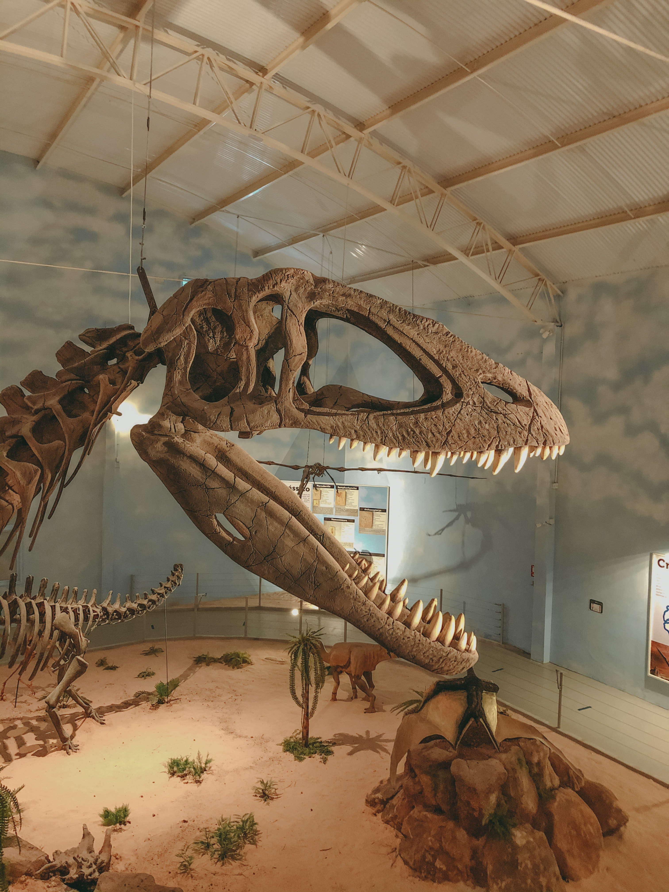

Expeditions

Offered Time Periods
Our team offers many expeditions which cover the Triassic, Jurassic, and Cretaceous periods. We are constantly working to ensure that your experience with our time machine is excellent, as well as exploring these periods to discover how much we are able to do with them. At this time, we are hoping to expand our collection of huntable dinos and times to hunt in.
Triassic

The Triassic period features many huntable dinos, such as the Camposaurus, Eoraptor, Pantydraco, and Staurikosaurus.
Jurassic
The Jurassic period features many huntable fan-favorites, such as the Brachiosaurus, Brontosaurus, Megalosaurus, Stegosaurus, and the Tyrannosaurus Rex.
Cretaceous

The Cretaceous period features many huntable dinos, such as the Albertosaurus, Ankylosaurus, Carnotarus, Giganotosaurus, Iguanodon, Minmi, Parasaurolophus, Spinosaurus, Triceratops, and Velociraptor.
If you are in need of more information on these beasts, visit activewild.com to learn of your desired dinosaur.